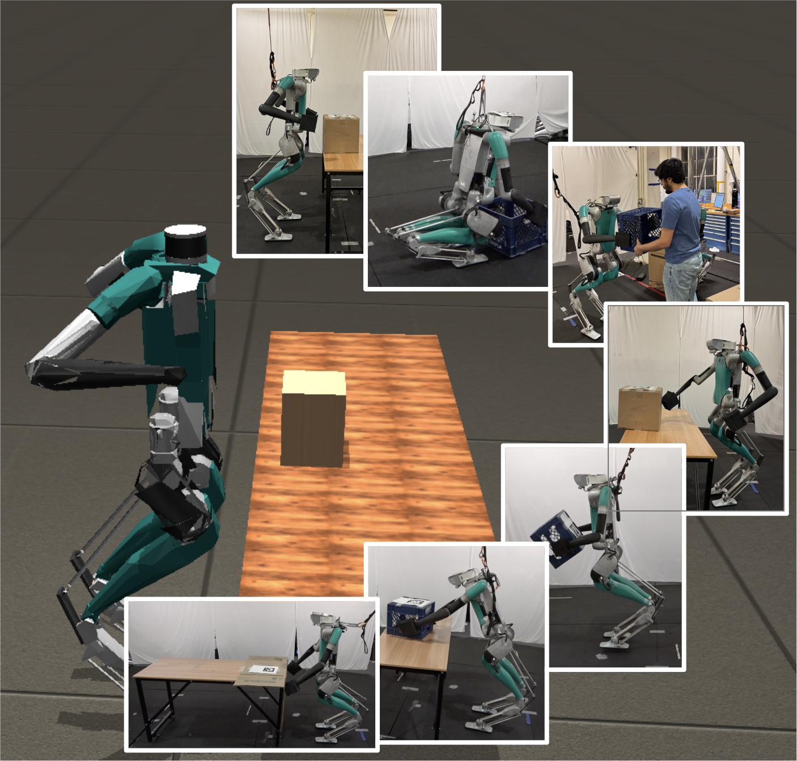
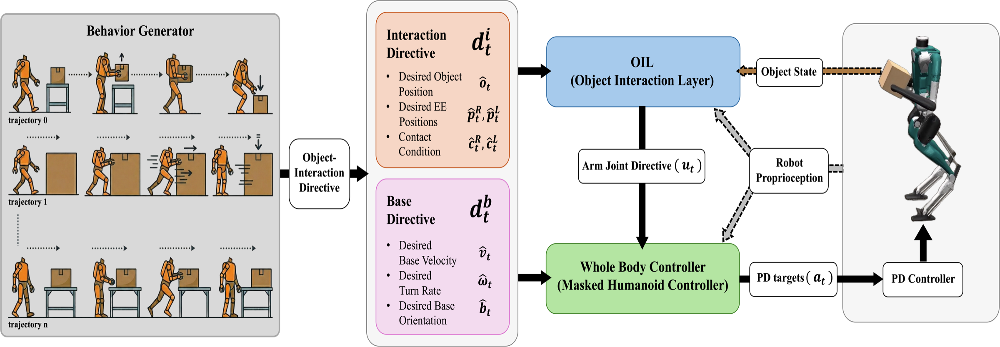

OIL: An Object Interaction Layer
for Humanoid Whole-Body Control
Best Paper Nominee · UR-RAD AAAI Symposium 2026
Dynamic Robotics and AI Lab (DRAIL), Oregon State University
Abstract
Humanoid whole-body controllers provide a useful interface for commanding robot motion, but object interaction introduces an additional requirement: specifying what the object should do. OIL extends that interface with desired object motion, hand targets, and contact intent. It translates those commands into arm-joint directives for a frozen Masked Humanoid Controller (MHC), which provides whole-body coordination.
The same interaction layer supports unimanual and bimanual sliding, pick-and-place, loco-transport, and large-box pushing without task-specific fine-tuning. We compare one policy against robot-centric and task-specific baselines in simulation, and demonstrate composed behaviors on Digit hardware.
Object Interaction Layer (OIL)
One controller, one representation for object interaction.

- Pickup
- Putdown
- Handover
- Unimanual slide
- Carry
- Bimanual slide
- Push
Approach
OIL adds an object-interaction directive to the existing whole-body controller interface.

Object-level directives
The interaction directive contains a desired object position, left and right hand targets, and a binary contact flag for each hand. Sliding, pushing, and picking share the same format; there is no task label. Contact timing is specified, while the policy learns how to realize the interaction.
A frozen whole-body controller
OIL takes object state and robot proprioception and outputs eight arm-joint targets in MHC’s existing command space. The base directive supplies velocity, turn, orientation, and height commands. Both OIL and MHC run at 50 Hz, with PD execution at 2 kHz.
Results
Simulation evaluation across five interaction behaviors.
| Behavior | NoObj | OIL | TaskSp |
|---|---|---|---|
| Unimanual slide | 58.1 | 89.1 | 90.0 |
| Bimanual slide | 99.4 | 100.0 | 99.0 |
| Pick and place | 63.6 | 94.3 | 94.5 |
| Loco-transport | 15.8 | 84.1 | 81.4 |
| Large-box push | 18.3 | 84.6 | 76.9 |
OIL achieves 90.4% mean success, compared with 51.0% for NoObj and 88.4% for TaskSp. NoObj omits object intent; TaskSp uses a separate policy for each task.
Results from the paper and UR-RAD presentation. See the paper for evaluation conditions and analysis.
Limitations and Future Work
The current interface uses binary hand-contact flags and relies on object-state estimates. It does not specify contact forces or where on an object’s surface contact should occur. The frozen MHC also limits adaptation of gait to heavy loads.
Richer directives could describe contact location and force, object–environment constraints, and uncertainty in object state. These directions extend the same idea: specify the desired interaction through an object-centric interface.
BibTeX
@misc{dugar2026oil,
title = {OIL: An Object Interaction Layer for Humanoid Whole-Body Control},
author = {Pranay Dugar and Mohitvishnu S. Gadde and
Rajesh Mangannavar and Aayam Kumar Shrestha and Alan Fern},
year = {2026},
eprint = {2610.14033},
archivePrefix = {arXiv},
primaryClass = {cs.RO},
url = {https://arxiv.org/abs/2610.14033}
}